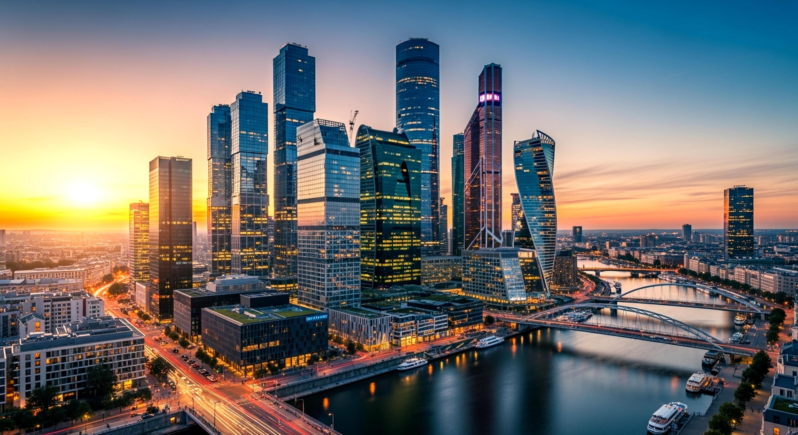

1
Moscow
Good for foreignersMoscow is the capital of Russia and the biggest educational, business and international center.
Best for:
Universities →
Students who want more opportunities, strong transport and a big international community.